Contrôle T3P
Taxi · VTC · LOTI · VMDTR · CPA — outil opérationnel fondé sur le manuel de référence.
Contrôle rapide
Accès terrain
Manuel
Favoris
⭐ Mes favoris
Accès direct à vos NATINF, fiches véhicules et fiches réflexes enregistrés.
Fiches véhicules
Consultation rapide du véhicule contrôlé, séparée de la check-list conducteur.
Infractions / NATINF
Référentiel issu du manuel. Toujours vérifier la base NATINF à jour avant rédaction définitive.
Documents
Images extraites du manuel et intégrées directement dans l’application.
Carte professionnelle taxi — recto
Toucher pour agrandir.
Carte professionnelle taxi — verso
Toucher pour agrandir.
Carte professionnelle VTC — recto
Toucher pour agrandir.
Carte professionnelle VTC — verso
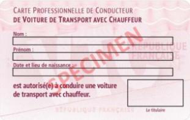
Toucher pour agrandir.
Vignette / macaron VTC (REVTC)
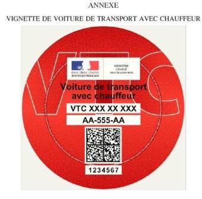
Toucher pour agrandir.
Vignette LOTI violette
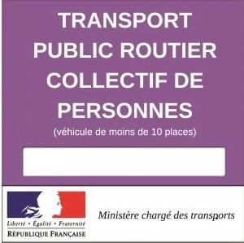
Toucher pour agrandir.
Attestation préfectorale d’aptitude physique
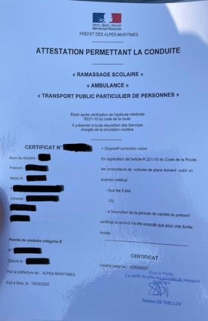
Toucher pour agrandir.
Attestation préfectorale d’aptitude physique
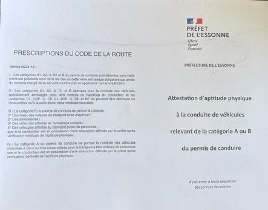
Toucher pour agrandir.
Attestation préfectorale d’aptitude physique
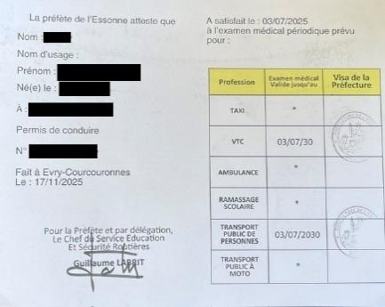
Toucher pour agrandir.
Copie conforme de la licence LOTI
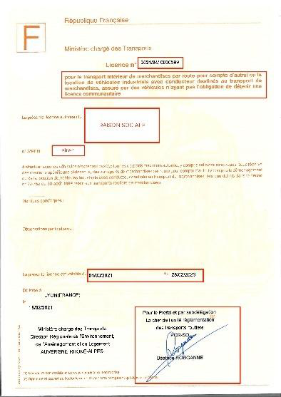
Toucher pour agrandir.
Copie conforme de la licence LOTI
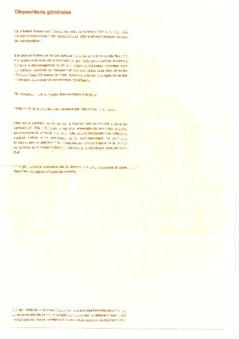
Toucher pour agrandir.
Ticket / note taxi
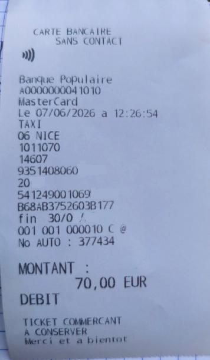
Toucher pour agrandir.
Ticket / note taxi
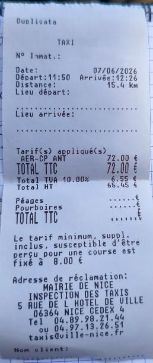
Toucher pour agrandir.
Bon de commande VTC
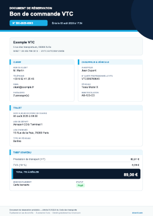
Toucher pour agrandir.
Billet collectif LOTI
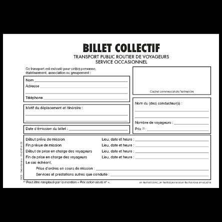
Toucher pour agrandir.
ADS taxi
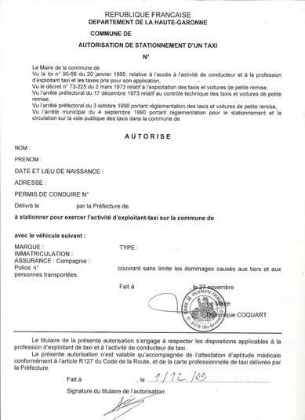
Toucher pour agrandir.
Carte professionnelle VMDTR
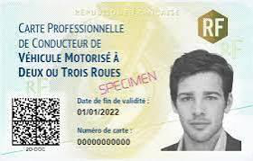
Toucher pour agrandir.
Carte professionnelle VMDTR
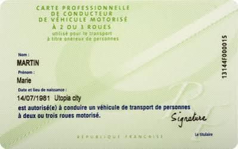
Toucher pour agrandir.
Vignette bleue VMDTR
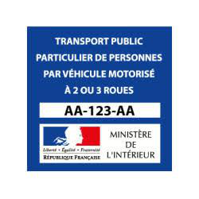
Toucher pour agrandir.
Fiches réflexes
Vue ultra-rapide par profession.
Générateur aide mémoire rapport
Trame factuelle : elle n’invente aucun fait et ne remplace pas la qualification finale.
Informations du contrôle
Photographies
Ajouter les photos déjà prises ou prendre une photo pendant le contrôle.
Procédure & rédaction
La logique du manuel : Contrôler → Vérifier → Qualifier → Rédiger.
Rapport de constatation
Le contrôle T3P réalisé par l’agent de police municipale reste dans le cadre de sa compétence et de la saisine légale à l’origine de l’intervention. Les constatations T3P sont consignées dans un rapport et transmises selon la procédure applicable, notamment à l’OPJ lorsque nécessaire.
Identité
Le manuel recommande de ne pas parler de « contrôle d’identité » pour la démarche T3P : relever les éléments d’identité dans le cadre légal applicable et rendre compte à l’OPJ en cas de refus/impossibilité lorsque nécessaire.
Faux document
Ne pas conclure seul à un « faux » sur une simple discordance. Relever les éléments objectifs, photographier/recouper si légalement possible, et transmettre à l’OPJ.
Procédure rapide / complète
Dès qu’un document est manquant, incohérent ou douteux, passer en procédure complète : relevés précis, photographies utiles, vérifications registre, déclarations spontanées et transmission adaptée.
Ressources officielles
Liens intégrés depuis les ressources du manuel.
Ce manuel de travail constitue un outil d’aide opérationnelle. Il ne s’agit pas d’un document réglementaire. Il ne se substitue ni aux textes en vigueur, ni aux instructions de la hiérarchie, ni à celles de l’autorité judiciaire.
Document interne à accès restreint : utilisation professionnelle par les agents concernés. Toute diffusion extérieure, utilisation commerciale ou formation non autorisée est interdite sans accord écrit préalable.
À propos
Application de consultation et d’aide opérationnelle pour agents de police municipale.
Référentiel
Le contenu est construit à partir du manuel smartphone fourni, avec une couche d’interface terrain : check-lists, statuts visuels, analyse des anomalies, NATINF, documents visuels, recherche et favoris.
Suggestion / commentaire
Une idée d’amélioration ou un commentaire ? retour.guidet3p@gmail.com